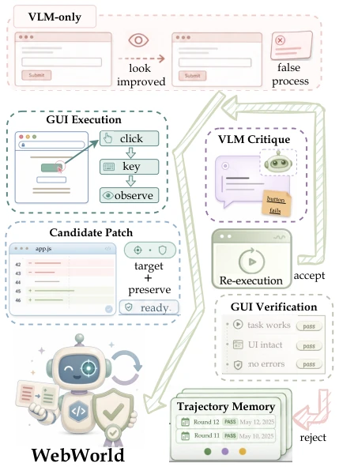
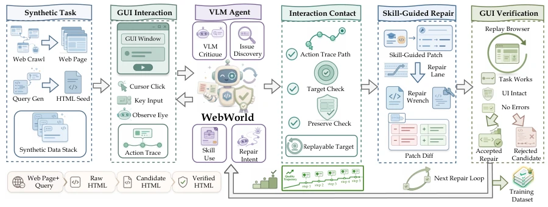
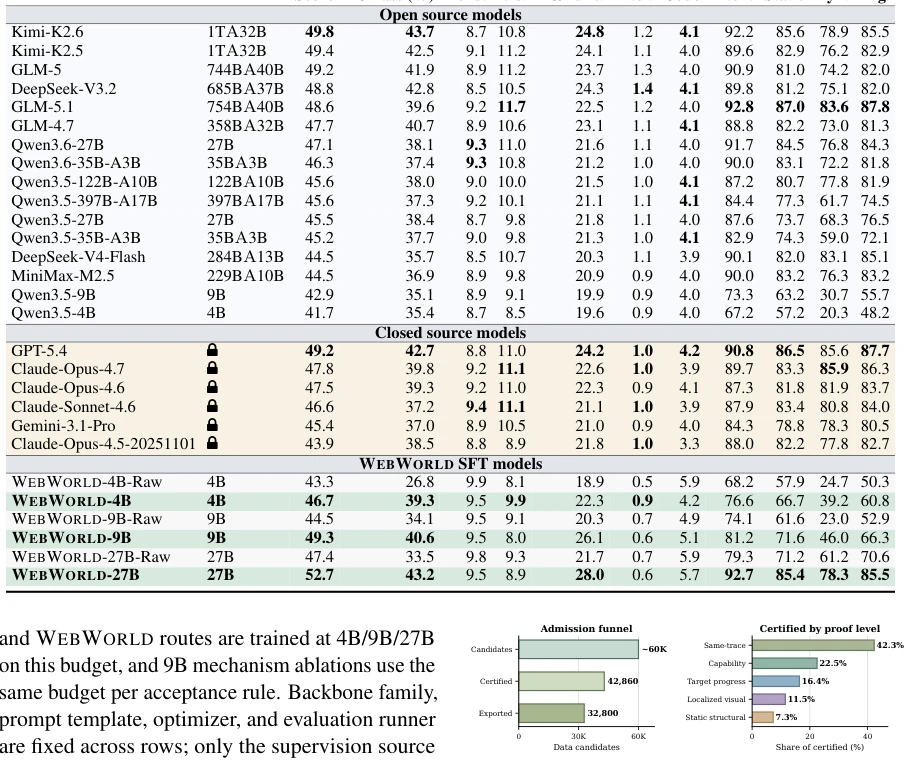
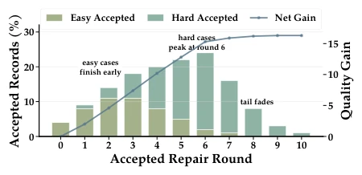
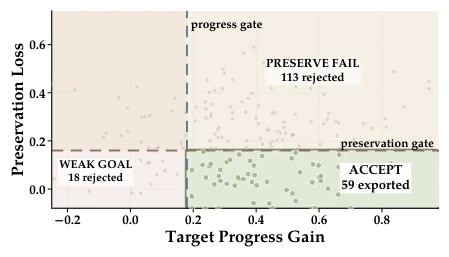
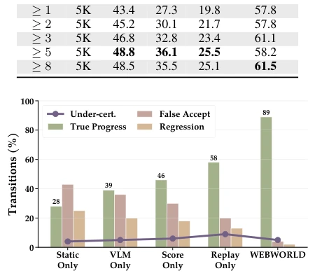

This paper employs browsers as world models, an approach that is quite unconventional. VLMs modify code and score themselves, akin to students correcting and grading their own papers, which is prone to self-deception. WebWorld forces the browser to act as the judge; only if the browser runs successfully does it count. The results are indeed impressive; the 27B model crushed the baseline on HTMLBench, even catching up to Kimi-K2.6 and GPT-5.4. However, it only handles single-file HTML; multi-file projects or places requiring aesthetic judgment still rely on VLMs guessing blindly. This "browser judge" tactic solves functional regression issues, but limits VLMs to "giving opinions," which is somewhat overkill, yet for code generation, this clearly distinguishes between "can run" and "looks good".
研究动机Motivation
现有 VLM 驱动的代码自改进存在结构性缺陷：模型既是提议者又是评判者。VLM 基于截图判断修复是否有效，但视觉上的“看起来好了”不等于功能上“真的能跑”。比如按钮失效、游戏忽略键盘输入，或者修复一处却破坏了原有功能。这种“自说自话”的闭环无法保证行为正确性。虽然已有工作如 SWE-bench 利用测试套件作为预言机 (Jimenez et al., 2024)，但 Web 代码缺陷多为视觉或交互性，缺乏等效测试套件。MMLM-as-judge 框架 (Zhang et al., 2025) 试图用视觉评判，但继承了提议者的模态偏差。因此，需要一个 VLM 无法欺骗的“对手方”，而浏览器本身就是 HTML 行为的确定性可执行模拟器，即 Web 代码的世界模型。
Existing VLM-driven code self-improvement has structural defects: the model is both the proposer and the judge. VLMs judge repair effectiveness based on screenshots, but visually "looking good" does not equal functionally "actually running." For example, buttons failing, games ignoring keyboard input, or fixing one thing while breaking existing functionality. This "talking to oneself" closed loop cannot guarantee behavioral correctness. Although existing work like SWE-bench utilizes test suites as oracles (Jimenez et al., 2024), web code defects are mostly visual or interactive, lacking equivalent test suites. The MMLM-as-judge framework (Zhang et al., 2025) attempts visual judgment but inherits the proposer's modality bias. Therefore, an "opponent" that VLMs cannot deceive is needed, and the browser itself is a deterministic executable simulator of HTML behavior, i.e., the world model of web code.

Figure 1: When the VLM judges by screenshot, edits that look improved can fail under browser re-execution: the proposer-judge gap our audit measures.
WebWorld constructs a "hypothesis-proof" separated closed loop. First, the VLM reads GUI execution evidence (screenshots, DOM, console) and proposes a critique; the planner compiles it into an "Interaction Contract," containing target predicates, verification actions, and the set of capabilities to be preserved. Next, the browser, as the world model, re-executes the candidate code; if target progress is met and verified capabilities are not broken, it issues an "Acceptance Certificate." Only transformations with certificates can enter the "Quality Ratchet," becoming SFT training data. Core innovations lie in: 1) Interaction Contract converts free-text critique into verifiable typed claims; 2) Browser re-execution serves as an uncheatable verifier, distinguishing visual optimization from functional repair; 3) Quality Ratchet ensures monotonic growth of capability memory, preventing regression. This avoids VLM subjective preferences contaminating supervision signals.

Figure 2: WEBWORLD splits hypothesis from proof: the VLM proposes via an interaction contract, the browser re-executes to issue or refuse an acceptance certificate, and only certified transitions enter the SFT export.

Figure 3: Admission funnel and proof-level decomposi- tion of the certified pool.
Tested on HTMLBench-400 and MiniAppBench-Val. WEBWORLD-27B improved by 5.3 points on HTMLBench and 14.9 points on MiniApp compared to Raw-27B, reaching the level of Kimi-K2.6 and GPT-5.4. Ablation studies show that after removing the certificate mechanism (NoCertificate), the 9B model's gain almost disappears (only 0.4 points), proving browser verification is core. Deep diagnostics indicate that trajectories with more rounds of certificate verification (depth ≥ 5) have higher supervision density. Additionally, verification repairs significantly reduced specific GUI failures such as console errors, dead controls, etc. The data construction process is completely isolated from the evaluation set, ensuring no leakage.

Figure 4: Accepted repairs span multiple rounds.

Figure 6: Accepted candidates must pass both progress and preservation gates.

Figure 5: Full admission reduces weak or false progress.